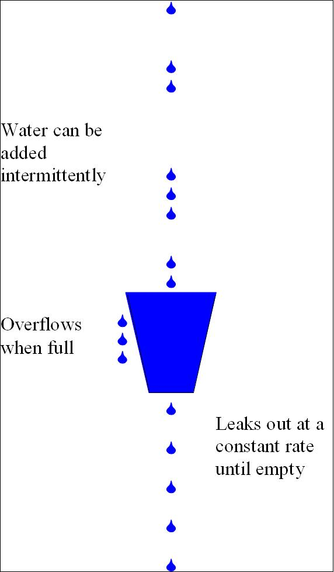
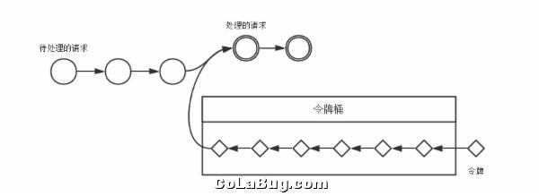

6.6. 其他算法¶
6.6.1. The Leaky Bucket Algorithm(漏桶算法)¶
//网络流量整形（Traffic Shaping）和速率限制（Rate Limiting）中最常使用的2种算法
1.来水量可以不均匀，但出水量均匀直到到无水
2.超出桶容量的水，直接丢弃

6.6.2. The Token Bucket Algorithm(令牌桶算法)¶
1.按指定速率增加令牌，超出容量的令牌丢弃 2.过来数据流消耗桶中令牌 3.若桶内有足够的令牌则让数据包输出，否则丢弃

6.6.3. Nagle算法¶
- TCP/IP协议中，无论发送多少数据，总是要在数据前面加上协议头，同时，对方接收到数据，也需要发送ACK表示确认。为了尽可能的利用网络带宽，TCP总是希望尽可能的发送足够大的数据。（一个连接会设置MSS参数，因此，TCP/IP希望每次都能够以MSS尺寸的数据块来发送数据）。Nagle算法就是为了尽可能发送大块数据，避免网络中充斥着许多小数据块。
Nagle算法的基本定义是任意时刻，最多只能有一个未被确认的小段。 所谓“小段”，指的是小于MSS尺寸的数据块，所谓“未被确认”，是指一个数据块发送出去后，没有收到对方发送的ACK确认该数据已收到。
Nagle算法的规则（可参考tcp_output.c文件里tcp_nagle_check函数注释）:
（1）如果包长度达到MSS，则允许发送；
（2）如果该包含有FIN，则允许发送；
（3）设置了TCP_NODELAY选项，则允许发送；
（4）未设置TCP_CORK选项时，若所有发出去的小数据包（包长度小于MSS）均被确认，则允许发送；
（5）上述条件都未满足，但发生了超时（一般为200ms），则立即发送。
6.6.4. CORK算法¶
Nagle算法和CORK算法非常类似，但是它们的着眼点不一样，Nagle算法主要避免网络因为太多的小包（协议头的比例非常之大）而拥塞，而CORK算法则是为了提高网络的利用率，使得总体上协议头占用的比例尽可能的小。但这二者都会避免发送小包，在这一点上是一致的。而且在Linux的实现上，Nagle和CORK也是结合在一起的。然而Nagle算法关心的是网络拥塞问题，只要所有的ACK回来则发包，而CORK算法却可以关心内容，在前后数据包发送间隔很短的前提下（否则内核会帮你将分散的包发出），即使你是分散发送多个小数据包，你也可以通过使能CORK算法将这些内容拼接在一个包内，如果此时用Nagle算法的话，则可能做不到这一点。
6.6.5. Diffie-Hellman¶
一种确保共享KEY安全穿越不安全网络的方法，它是OAKLEY的一个组成部分。
Whitefield与Martin Hellman在1976年提出了一个奇妙的密钥交换协议，
称为Diffie-Hellman密钥交换协议/算法(Diffie-Hellman Key Exchange/Agreement Algorithm).
这个机制的巧妙在于需要安全通信的双方可以用这个方法确定对称密钥。
然后可以用这个密钥进行加密和解密。
但是注意，这个密钥交换协议/算法只能用于密钥的交换，而不能进行消息的加密和解密。
双方确定要用的密钥后，要使用其他对称密钥操作加密算法实际加密和解密消息